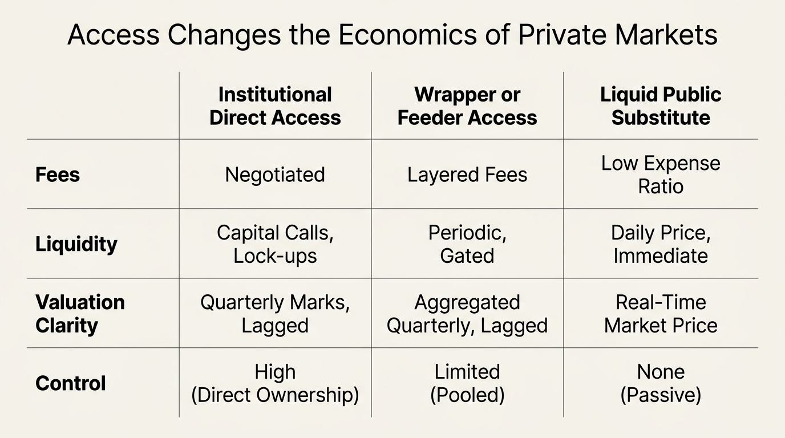

The Private Markets Mirage
Private markets are often sold as the part of the capital stack where sophisticated money gets the real edge. The language is familiar: privileged deal flow, access to operational alpha, smoother returns, lower correlation, and a premium for tolerating illiquidity. That framing is not entirely false. It is incomplete in the exact places that matter for household and smaller-institution portfolio design. The relevant question is not whether a private asset can compound. It is whether a specific investor can access that asset class on terms, through managers, and at a size where the net economics still justify the lockup and the opacity.
The mirage begins when exclusivity is mistaken for return quality. Private assets can look safer because marks move more slowly. They can look more elite because access is gated. They can look more profitable because gross-case studies lead the marketing narrative while fee ladders, stale pricing, and lost optionality sit in the footnotes. Once those adjustments are made, the relevant comparison becomes much less romantic. The issue is not whether private markets ever work. They clearly do for some investors and some managers. The issue is that most investors first encounter the story in its gross form and only later discover that the household version is often a smaller, more constrained, and more expensive trade than the headline implies.
Core thesis: the private-market edge is not the existence of a lockup. It is the rare combination of access, manager selection, fee terms, and balance-sheet resilience that allows a lockup to be worth owning.
What the pitch gets right
Private markets do contain real structural differences from public markets. Assets are negotiated rather than continuously auctioned. Managers can influence operations directly. Capital can be patient in ways that open-market shareholders often cannot be. Cash flows are drawn and returned on a different timetable. Some segments such as venture capital or specialist buyout strategies also exhibit real dispersion, which means manager selection matters more than in heavily commoditized public exposures.
Those features create the theoretical case for an illiquidity premium. If capital is tied up for years, investors should rationally demand compensation. The problem is that a theoretical premium is not the same thing as a realized net premium for the end investor who pays the fees, tolerates the valuation lag, and gives up the option to redeploy capital when conditions change.
Access is narrower than many investors appreciate
Even before performance is discussed, access itself is filtered. The SEC's 2024 accredited-investor guidance states that individuals may qualify through net worth above $1 million excluding a primary residence, or through income above $200,000 individually or $300,000 with spouse or partner in each of the prior two years with an expectation of the same in the current year. That gating does not prove that only sophisticated decisions happen inside private markets. It does show that much of the market is structurally unavailable to ordinary investors in direct form.
The retail-access story is also more conditional than the marketing language suggests. SEC staff guidance in 2025 noted that registered closed-end funds of private funds have often limited offers to accredited investors and have required minimum initial investments of at least $25,000 when private-fund exposure crosses certain thresholds. The practical consequence is straightforward. By the time many investors encounter “private markets,” they are often seeing a wrapper, a feeder, or a constrained access point rather than the clean institutional form used in elite track-record discussions.

Smoother marks are not the same thing as lower risk
One of the strongest psychological attractions of private assets is visual stability. Statements move less. Drawdowns often appear smaller or later than they do in public markets. That does not mean the underlying economic exposure is less volatile. It often means the valuation process is less frequent, less market-clearing, and more dependent on models or appraisal conventions.
The NBER paper Do Private Equity Funds Manipulate Reported Returns? is useful here because it attacks the valuation issue directly. Brown, Gredil, and Kaplan found evidence that some underperforming managers boost reported returns during fundraising periods. That does not imply that all private marks are unreliable. It does imply that interim marks can be strategically influenced and that apparent smoothness should never be treated as proof of superior risk control.
For a household balance sheet, this distinction is critical. Public volatility can feel harsher because it is visible every day. Private volatility can be just as real while remaining latent until refinancing, secondary-sale need, fund recapitalization, or delayed write-down forces it into view.
Fees and bargaining power are not evenly distributed
Private-market investors do not all pay the same price for access. Begenau and Siriwardane showed in their NBER work on public pensions that most private-capital funds appear to have two tiers of fees and that some investors consistently pay lower fees than others within the same funds. This is a direct reminder that the category is negotiated, not standardized. Large, experienced institutions often receive different economics from smaller or less connected investors.
That matters because private-market returns are typically discussed in ways that blur gross operating success, gross fund performance, and net investor result. A strategy can create real operating value and still leave the marginal investor with a modest outcome once management fees, carry, layered vehicles, tax friction, and the capital-call timeline are all included.

Risk-adjusted outperformance is weaker than the mythology
The strongest academic pushback against the private-markets mythology is not that private assets never outperform. It is that once risk is measured more carefully, the average excess profit looks smaller and less robust than the story implies. Gupta and Van Nieuwerburgh's NBER paper Valuing Private Equity Strip by Strip applied a cash-flow-based valuation framework and found that accounting for horizon-dependent risk and broad equity-factor exposure yields negative average risk-adjusted profits, even while substantial cross-sectional variation and persistence suggest that some funds do outperform.
That is the right way to read the space. Dispersion is real. Top managers may justify the category. The median experience does not automatically inherit the top-quartile narrative. This is why private markets behave less like a generic asset class and more like a selection game with a steep penalty for paying institutional prices without institutional access advantages.
| Established | Reasoned inference | Still uncertain |
|---|---|---|
| Direct access is restricted by eligibility standards and minimums in many structures. | Smaller investors often reach the category through wrappers that dilute some of the institutional advantage. | How much retail-oriented access structures will improve net economics over time. |
| Interim valuations are less market-clearing and can be strategically influenced in some settings. | Reported smoothness likely causes many investors to underprice real economic volatility. | How severe valuation-lag distortion is across the full modern private-market universe. |
| Fee schedules vary across investors and can materially alter the net result. | Bargaining power is itself part of the asset class return equation. | Whether a given investor can consistently access top-quartile managers on competitive terms. |
| Average risk-adjusted profits look weaker once cash flows and broad factor exposure are modeled carefully. | The category is best treated as a high-dispersion specialist allocation, not a default source of hidden alpha. | Which subsegments will retain durable net premia after continued capital inflow. |
The household-level problem is optionality, not only return
For many investors the decisive cost is not only fees. It is foregone optionality. Locked capital cannot be redeployed during a public drawdown, used to defend a business during stress, moved into a better manager, or accessed to handle a personal liquidity event without secondary-sale discounts or credit dependence. That lost flexibility has value even when it is absent from a performance report.
This is why private markets often fit best after core resilience is already solved. An investor with ample liquid reserves, low forced-seller risk, long horizon, stable tax planning, and genuine manager access can rationally dedicate a sleeve to illiquid assets. An investor who still needs flexibility is often exchanging a visible public-market discomfort for a less visible but more dangerous private-market rigidity.
What a disciplined investor should do instead
The right posture is not blanket rejection. It is refusal to accept category-level mythology. Any private-market allocation should answer five questions before capital is committed.
- Access: am I seeing the same opportunity set and fee terms that the strongest institutions see, or a retail wrapper version of the story?
- Selection: what is the actual evidence that this manager belongs in the high-dispersion winning tail rather than in the mean?
- Liquidity: what household or institutional functions become harder if this capital is unavailable for years?
- Valuation: if marks were fully public and daily, would the perceived risk still look acceptable?
- Net result: after every fee, tax, and friction layer, what public-market alternative must this allocation beat to deserve its place?
If those questions cannot be answered clearly, the investor is usually buying private-market prestige rather than private-market edge.
Primary Sources
U.S. Securities and Exchange Commission. Accredited Investors. 2024.
U.S. Securities and Exchange Commission. ADI 2025-16 - Registered Closed-End Funds of Private Funds. 2025.
Brown GW, Gredil OR, Kaplan SN. Do Private Equity Funds Manipulate Reported Returns? NBER Working Paper 22493. 2016.
Begenau J, Siriwardane E. How do Private Equity Fees vary across Public Pensions? NBER Working Paper 29887. 2022.
Gupta A, Van Nieuwerburgh S. Valuing Private Equity Strip by Strip. NBER Working Paper 26514. 2019.
Erel I, Flanagan T, Weisbach MS. Risk-Adjusting the Returns to Private Debt Funds. NBER Working Paper 32278. 2024.